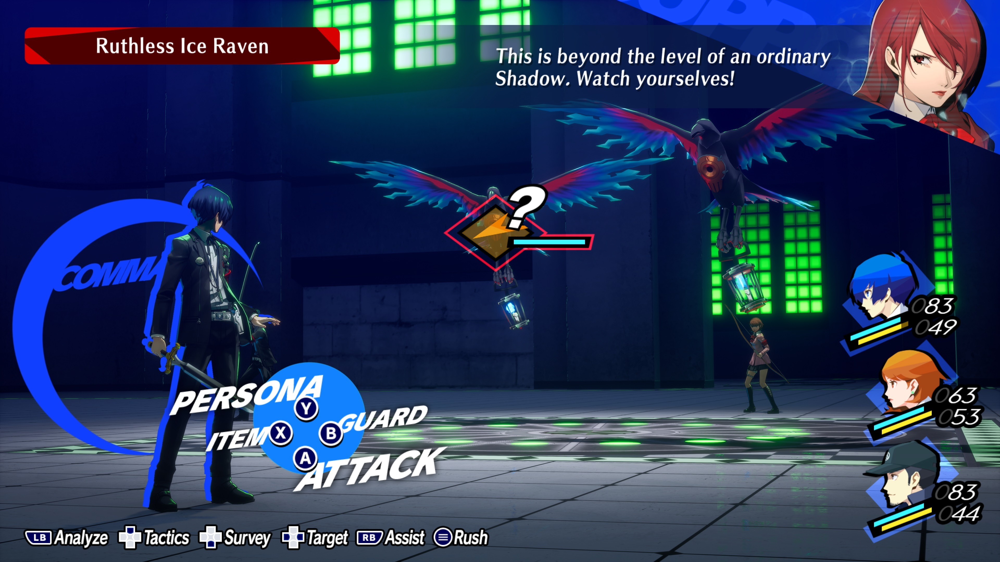

Persona 3 Reload
Persona 3 Reload é uma recriação moderna do clássico Shin Megami Tensei: Persona 3, lançado originalmente em 2006. Desenvolvido pela Atlus, o jogo traz uma reinterpretação completa da experiência que marcou a franquia, com gráficos totalmente renovados na Unreal Engine, dublagens expandidas, trilha sonora reimaginada e melhorias significativas na jogabilidade. Lançado em 2024, ele busca tanto atrair novos jogadores quanto satisfazer os fãs antigos que esperavam por uma versão mais acessível e atualizada do título que consolidou a identidade da série Persona.
A história gira em torno de um estudante transferido para a cidade de Iwatodai, que descobre a existência da misteriosa Dark Hour, um período secreto entre um dia e outro em que monstros chamados "Shadows" surgem. O protagonista, junto ao grupo conhecido como SEES (Specialized Extracurricular Execution Squad), enfrenta essas criaturas dentro da Torre Tartarus, um labirinto que simboliza os mistérios da cidade. Ao mesmo tempo, o jogo explora a vida cotidiana do personagem, equilibrando batalhas contra forças sombrias e interações sociais com colegas, professores e amigos.

Um dos grandes atrativos de Persona 3 Reload é a forma como mescla RPG tradicional com elementos de simulador de vida. Durante o dia, o jogador pode fortalecer laços sociais — conhecidos como Social Links — estudar, trabalhar em empregos de meio período ou simplesmente passar tempo com outros personagens. Essas escolhas impactam diretamente a força das Personas que podem ser evocadas em combate. Já nas batalhas, o sistema de turnos foi modernizado, trazendo mecânicas refinadas que lembram o estilo de Persona 5, deixando os confrontos mais dinâmicos e estratégicos.
Visualmente, o jogo impressiona ao trazer um estilo artístico vibrante, menus estilizados e animações fluidas que dão nova vida ao clássico. Além disso, a trilha sonora — um dos pontos mais marcantes da franquia — recebeu novos arranjos sem perder a essência marcante que conquistou os jogadores. Persona 3 Reload não é apenas uma simples remasterização, mas uma verdadeira reconstrução que respeita o legado do original enquanto se adapta às expectativas modernas. É, portanto, uma experiência essencial tanto para veteranos da série quanto para quem deseja conhecer o universo de Persona pela primeira vez.
